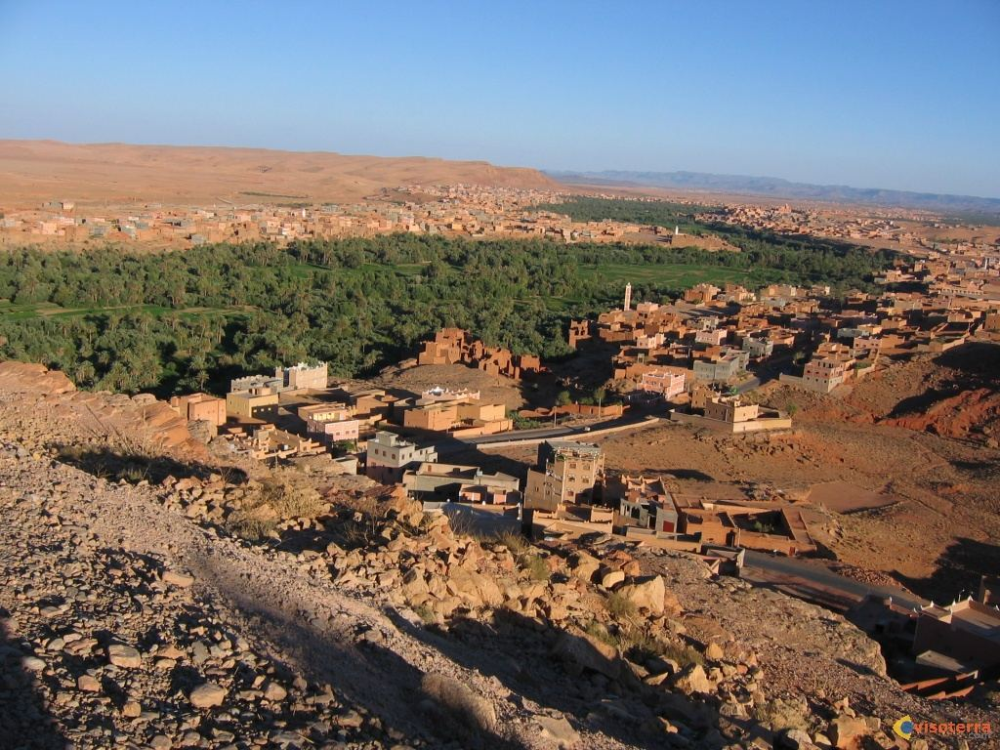
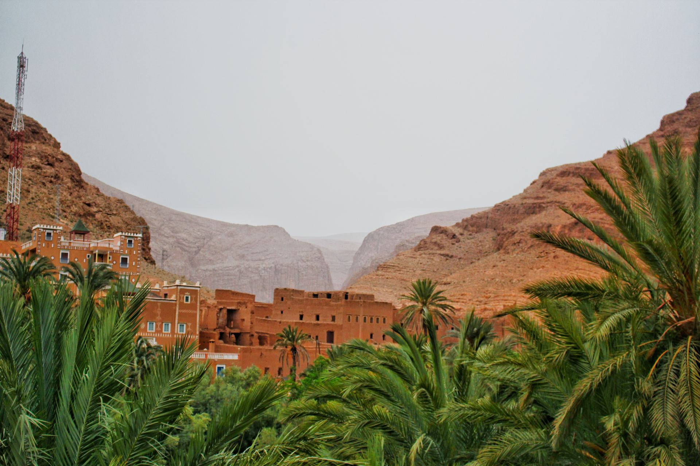

Welcome to
Tineghir
Gateway to the Majestic Todra Gorge
Discover the heart of Morocco's Draa-Tafilalet region, where ancient kasbahs meet towering canyon walls and palm-lined oases paint the desert green.
Welcome to
Gateway to the Majestic Todra Gorge
Discover the heart of Morocco's Draa-Tafilalet region, where ancient kasbahs meet towering canyon walls and palm-lined oases paint the desert green.
300m
Canyon Height
42,000+
Population
1,400m
Altitude
1000+
Years of History
Discover
Nestled at the foot of the High Atlas Mountains, Tineghir is an enchanting oasis city that has captivated travelers for centuries. This ancient Berber settlement sits along the legendary Route of a Thousand Kasbahs, offering a window into Morocco's rich cultural heritage.
The city is renowned for its spectacular palm groves stretching along the Todra River, traditional mud-brick kasbahs, and its position as the gateway to the breathtaking Todra Gorge — one of Morocco's most dramatic natural wonders.
Between Ouarzazate & Errachidia
Berber & Arab cultures

Living History
For centuries Tineghir stood on the trans-Saharan caravan routes linking the Atlas Mountains to the great market of Sijilmasa. Berber (Amazigh) tribes built fortified ksour along the Todra River, Jewish merchants kept shops in the old mellah, and Arab scholars passed through on their way to Fez — each leaving a layer in the city's language, crafts, and architecture.
That blend is still visible today: Tamazight spoken in the streets, mud-brick geometry unchanged for generations, and a palm oasis farmed the way it was a thousand years ago. Walk slowly here — the history is not in a museum, it is the street you are standing on.
Explore
From dramatic gorges to ancient kasbahs, Tineghir offers unforgettable experiences for every traveler.

A spectacular canyon with 300-meter high walls, perfect for hiking and rock climbing adventures.
📍 Todra Valley · 15 km from town

A lush oasis stretching along the Todra River with thousands of date palms and traditional villages.
📍 Todra River · in town

A historic mud-brick kasbah in the heart of Tineghir, showcasing traditional Berber architecture and panoramic city views.
📍 City center

Browse vibrant markets filled with handcrafted carpets, silver jewelry, and spices.
📍 Medina quarter · in town
 Culture
Culture
Wander through the old medina with its narrow alleys, traditional Berber architecture, and lively local atmosphere.
📍 Old town

An hour west: hairpin roads, the Monkey Fingers rock formations, and kasbah-dotted valleys made for slow driving.
📍 1 hr west · day trip

Tamtattouchte, Aït Hani and hillside ksour where Berber families farm terraced plots between river and cliff.
📍 Todra Valley · half-day

South of the city, a volcanic massif of black peaks and nomad trails — Morocco's great winter trekking ground.
📍 South · 3–6 day treks
Visual Journey
Experience the stunning landscapes and cultural richness of Tineghir through these artistic impressions.

Curated Trips
Whether you have a single day or a long weekend, make the most of your time in Tineghir with our curated guides.
Morning hike in Todra Gorge followed by a traditional lunch and afternoon stroll through the palm oasis.
Plan this day →Day 1: Tineghir Souks & Kasbahs. Day 2: Rock climbing in Todra. Day 3: Todra Valley trek & Berber village visit.
Plan this trip →
Activity Level
Moderate to High
Good To Know
Everything you need to move, eat, pay, and speak your way through Tineghir like you have been here before.
The center is walkable. Petit taxis run fixed short routes for a few dirhams; agree the fare for longer rides first. For gorges and valleys, hire a grand taxi for the day or join a local guide with a 4x4.
Kasbah-hotels on the gorge road have the views; family-run riads in town have the welcome. Book ahead in spring and autumn — small places fill up on climbing-season weekends.
Tagine and tanjia, Medfouna (Berber pizza) from Rissani day trips, oasis dates, and mint tea everywhere. Tap water is treated — bottled water is still the easy choice.
Dirhams (MAD) only — ATMs cluster on Avenue Mohammed V. Souk prices are negotiable with a smile; restaurants and taxis less so. Budget travelers manage on very little here.
Tamazight first, Darija and French widely understood, English growing in tourist spots. Try azul (hello) and tanemmirt (thank you) — effort is always rewarded.
Dress modestly, ask before photographing people, and accept the tea when it is offered — it is hospitality, not a sales pitch. Fridays are quiet around prayer time.
March–May and September–November: warm days, cool nights, full river. Summer exceeds 40°C in the gorge; winter is crisp with snow on the High Atlas.
One full day covers the gorge and palm grove. Three days add Dades Valley, the villages, and a Saghro trek — the sweet spot for most travelers.
Tineghir is calm and welcoming, including for solo and women travelers. Normal precautions apply: standard travel insurance, water, and sun protection on hikes.
Not for the town, gorge walks, or palm grove. Worth it for climbing routes, Saghro treks, and village visits — local guides know the trails and open the doors.
On The Ground
The figures travelers actually need — emergency lines, fares, and going rates. Checked October 2026; treat prices as approximate and confirm locally.
19
Police
112 works from mobiles
150
Fire / Ambulance
Protection Civile
177
Gendarmerie
Outside city limits
05 35 62 48 43
Tourist Police
National line, 24/7
*Approximate figures, October 2026 — agree taxi fares before the ride and confirm hotel and parking prices on arrival.